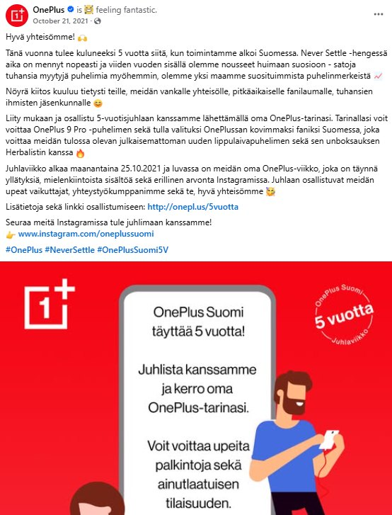
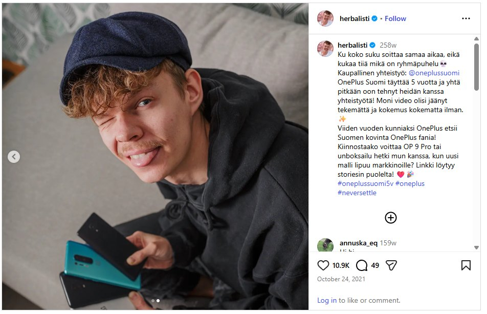
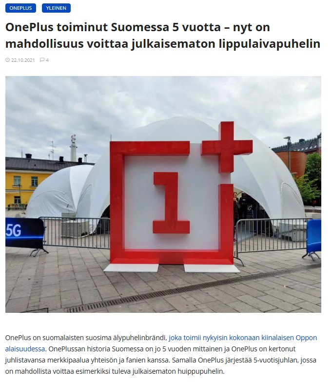
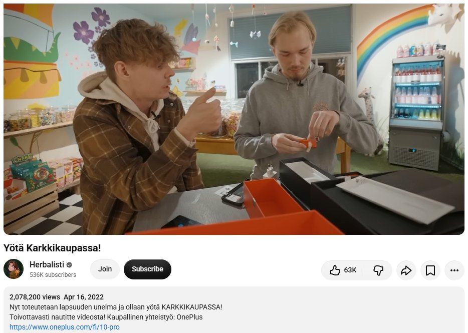
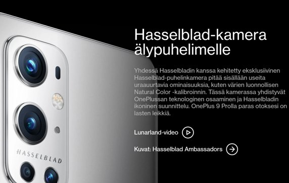
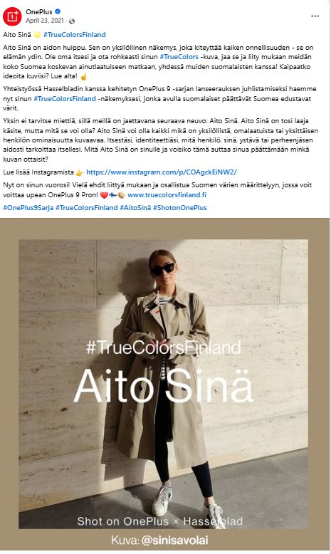
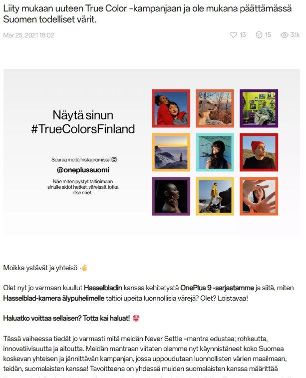
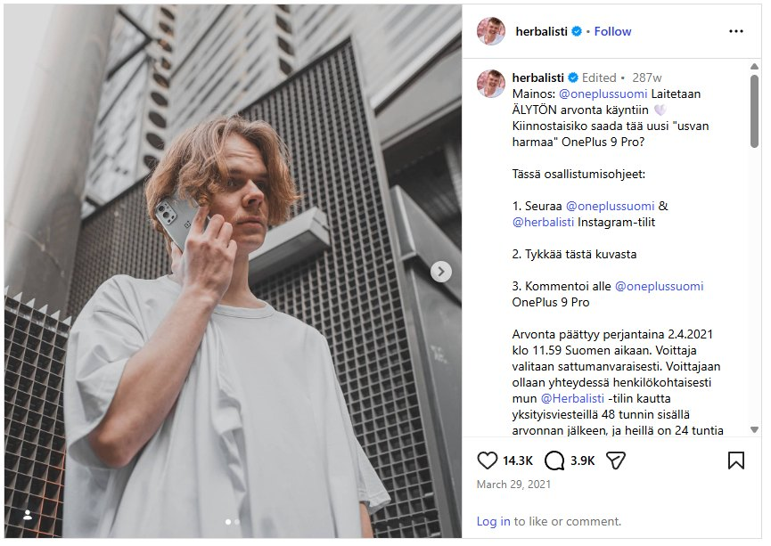
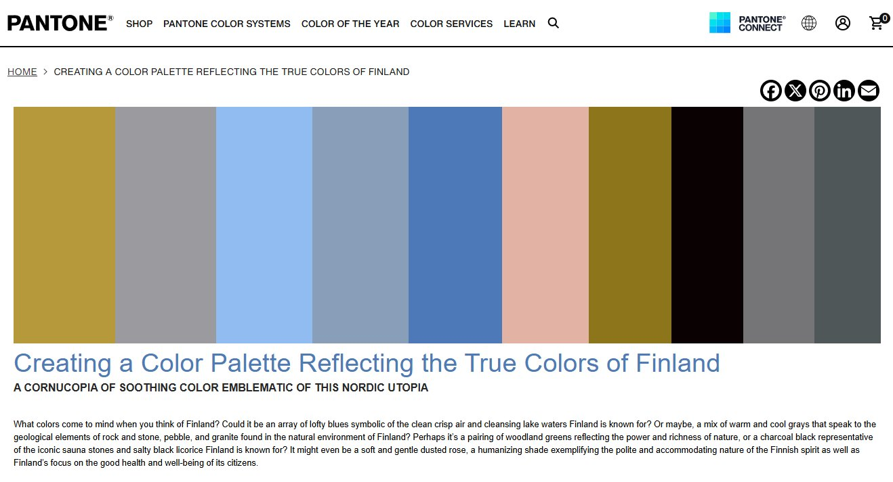
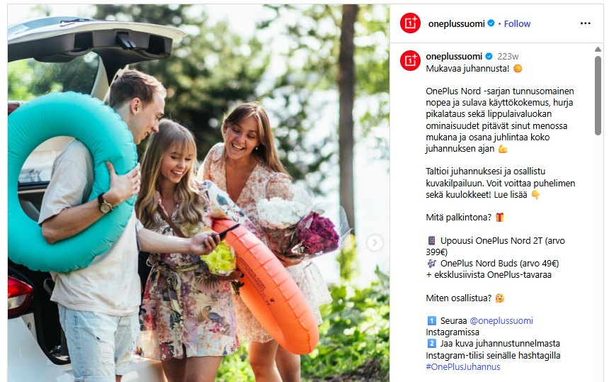

What I did
Brought OnePlus HQ and EMEA product launches to the Finnish market and localized them, from creative and copy to web and e-commerce content. I owned OnePlus Finland's social media, built the community with influencers and a platform-specific tone, and ran performance marketing and paid social from targeting and budget to optimisation.
- Implemented and localized OnePlus HQ and EMEA product launches for the Finnish market.
- Owned OnePlus Finland's social media and built the community with influencers, a platform-specific tone and proactive engagement.
- Ran performance marketing and paid social, from targeting and budget to optimisation.
- Produced creative and copy, and localized web and e-commerce content across channels.
OnePlus 10 Pro
Launch campaign · Helsinki, March 2022
5 years in Finland
Community celebration · October 2021




OnePlus 9 Series
Hasselblad camera launch and #TrueColorsFinland · Spring 2021





More launches and community
Events, music and seasonal campaigns

Next case
Republic